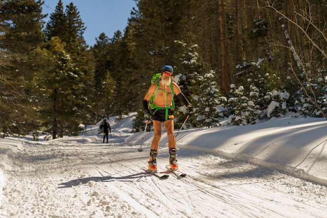

Mt. Taylor Winter Quadrathlon
Overview
I didn't "break"1 any bones or tear any ligaments.
Last year I finished in slightly over seven hours, but had a foot injury. This year, I had a different—lesser—foot injury (on a different foot), so I figured I'd finish about a half hour earlier, and I did, in 6:29:46.61.
Fortunately for you, dear reader, I participated in the Albuquerque Road Runners Relay RePlay FREEforALL event the following day, which meant I didn't write a ridiculously long Quad report, at least not when I could still remember everything.
Friday, i.e., check-in day
My son's car died in Moriarty. It's to be towed to a scrapyard in Albuquerque and instead of driving to Grants early, I'm hanging back, in case he needs a ride. Am I spending my time reviewing my drop bags, since I won't have extra time to do so at the motel? Nope. I'm too busy frittering and wasting the hours in an offhand way.
Uneventful drive. A line of people waiting to check-in to the motel, so I get back in my truck and drive over to check-in at The Quad packet pickup and gear drop. There's Ken. The good news is he's getting out and skiing a bunch. The bad news is he's no longer running. That's very rough, but, as always, he's upbeat.
Dustin, Julie, Barry and Dan
In stroll Dustin and Julie. I don't introduce them to Ken, because I'm
socially inept. Oh, and I also assume they know each other, because
they're all such great race directors and I imagine great race directors
communicate via telepathy. I'll never know.
I think I ran into Barry then, too. I certainly saw Barry before the start of the race. I ran into (and couldn't remember his name) Dan Clark during gear drop-off, too.
Saturday, i.e., race day
Is it Tom?
No. Mike.
I do this every year, don't I?
Yup.
Sure enough, I've parked in the same spot three years in a row and Michael Mills has been right next to me. He used to be (and perhaps still is) on Albuquerque Mountain Rescue Council (AMRC), the Search-And-Rescue (SAR) team that literally does the heavy lifting nearby. I spent ten years as a member of Cibola Search and Rescue and was on a few missions with Mike back in the day, but still I got his name wrong…three years in a row.
A little while later, Leigh said hi. She too was (and may still be) on AMRC.
Bike Up
Uneventful, but sufficiently long to give me a chance to appreciate the fact that I hadn't ridden my bike since September and that even when I do ride my bike, I studiously avoid riding uphill, because it sucks to do so because I have no experience doing so.
Run Up
I remembered to take my helmet off. I also took off my bike jersey. WTF? Where is that shirt I "remembered" putting in my drop-bag? I must have put it in the other (bike -> run transition) drop bag.
I see Adam and he lets me know that he's not feeling it this year. At the time, I didn't realize just how regularly he does this event. But now, I've scraped the results from 2010 on and see that during that time he's finished it ten times. Anyway, I cheer him on with Mitch Hedberg's joke "I used to take drugs. I still do, but I used to." There's a lot of truth in that little joke. I wouldn't have been quite so cheery, were it not for the ibuprofen, acetaminophen and caffeine dulling the discomfort of my right foot hot-spot.
Ski Up
Nope. No shirt there, either.
Nobody took my poles, although to be fair, I've done The Quad more than ten times and that only happened once.
This year, I finally learned how to put my boots on properly. It's not that I think you can teach an old dog new tricks; I think even an old dog eventually gets tired of the massive discomfort associated with putting his boots on incorrectly. Luckily, one of (I have at least two) my friends whose nickname is KK, shared a YouTube video that helped me greatly. I'd share it with you, but I can't find it. It's not "Ski Boots - How to put them on" or even "How to Properly Put on Your Ski Boots". Oh well, you probably aren't even reading by now and if you are, you probably know how to put your ski boots on.
Snowshoe Up and Down
I drank a lot of beer on November 27th, 2022, when I turned sixty. No, I'm not going to claim that I was still drunk and that's why my snowshoe time was so poor. I'm actually pretty happy with my snowshoe time. It's just that on November 28th, I decided to not drink for a while and when I got into Western States, I decided for a while means until June 25th, which means… I did The Quad sober.
So, when I got to the edge of the universe and saw the shots lined up, I promptly took one and poured it over my head. I gave up (or at least put on hold) drinking alcohol, but said nothing about wearing it. Good thing it wasn't cold up there, because I was still shirtless and alcohol evaporates quicker than water, which leads to increased evaporative cooling.
Ski Down
Good thing that I had a fleece hat and Javelina Jundred arm-warmers, because skiing down is a little chilly, since the little heaters in my body idle when I'm not moving my legs.
If I ever want to get a decent time at this event, I'm going to have to learn how to deal with the uphill portions of the ski down. Watching inch-worms speed past me is annoying.
Run Down
I definitely had the runner's high going on. I was listening to my iPod library on random per-song shuffle. I remember hearing So You Want To Be A Rock 'n' Roll Star followed by a song that seemed sublime, but I was high. I think it was something discordant, like Captain Beefheart or The Residents, but I didn't write it down and I certainly don't remember it weeks later. Oh well, this paragraph is only filler. How much can one say about an uneventful five mile downhill run?
Bike Down
There was a minor headwind, which my masculinity appreciates. One year we (meaning the mid-packers) had a tailwind on the bike down. That was scary. According to Strava, my max speed this year was 43.8 miles per hour. It kills me to use the brake on my bike in a race, and I didn't need to, but the year we had a tailwind, I did.
Dustin, Julie, Barry and Mike
Looking at the results, I see that Dustin and Julie (both 5:45:18) came in less than two minutes after Mike (5:43:19) and managed to pip Barry (5:45:23) by five seconds. Dang. That would have been cool to see, but I've never finished The Quad that quickly and probably never will.

Skiing shirtless was an accident.
I hadn't even planned on running shirtless.
I had intended to pack my purple JJ100 short-sleeve shirt in my bike/run transition bag. However, with the distraction of Elvis's issue, I wound up not packing a short-sleeve shirt in either of my drop bags, but I thought I had.
I wound up getting to Grants later than I had planned and by the time I got my bib, dropped off all my gear and checked in at the hotel, it was time to play poker, so I did that rather than review my gear. I didn't think I needed to review my gear because this was my twelfth and each year I copy my gear list from the previous year and only make a few changes based on weather.
So, on race day, when I got off my bike, I took off my long sleeve shirt and was going to put my short sleeve shirt on, then I saw there wasn't one. I could have just worn my short-sleeve bike jersey, but I thought I must have accidentally put my short-sleeve shirt in my other drop bag. I figured I could just run to the ski transition and put it on there, but ... it wasn't there, either, nor was it in my snowshoe backpack.
Although it was clearly one more instance of me mismanaging my time, part of the problem is that about a week out I thought it was going to be colder this year than last year, but it turned out to be significantly warmer. I have four different pair of tights/leggings and I only packed my heaviest ones. That was a mistake, so of course I was overheated by the time I got off my bike.
No Free Beer
After the race I was telling people that there was free beer, and since I'm not drinking, they could have mine. Only there wasn't free beer. I'm pretty sure they've done that in the past, but I'm not sure they even had it last year. I can't remember, have I mentioned that my memory is bad?
During The Quad in 2012, I fell hard while skiing and managed to acquire several hairline fractures in the top of my humerus. When I want to be a drama boy, I can say I "broke" my shoulder, but come on; that's not what people think of when they hear "break." Turns out, I also tore one of my ligaments. The hairline fractures were well on their way to complete healing by the time I saw a doctor.